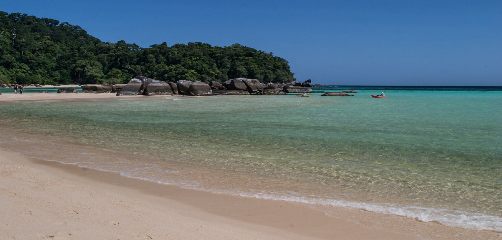
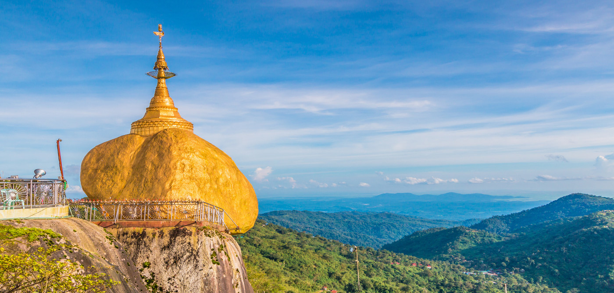
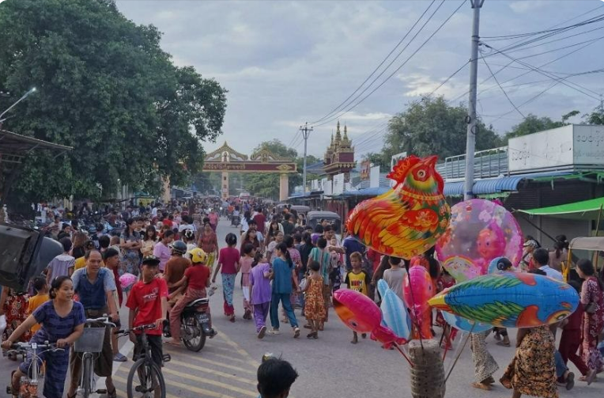
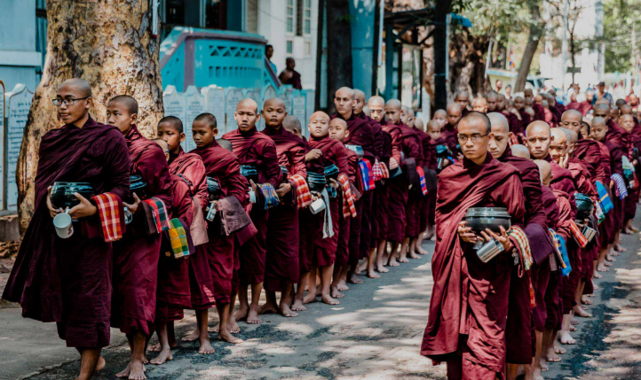
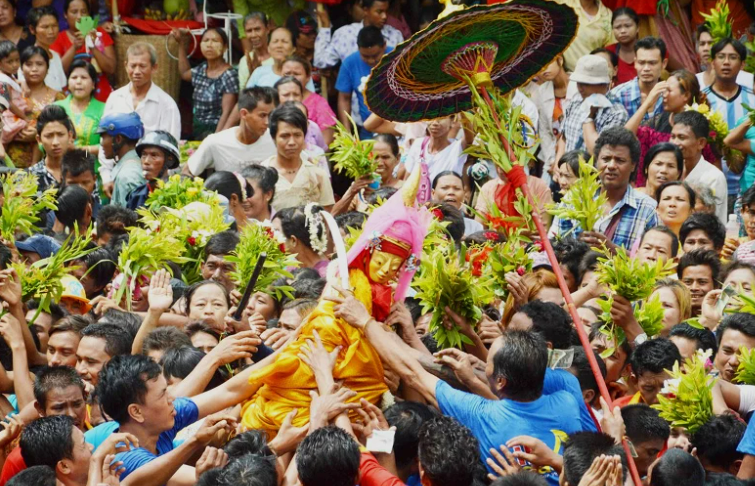
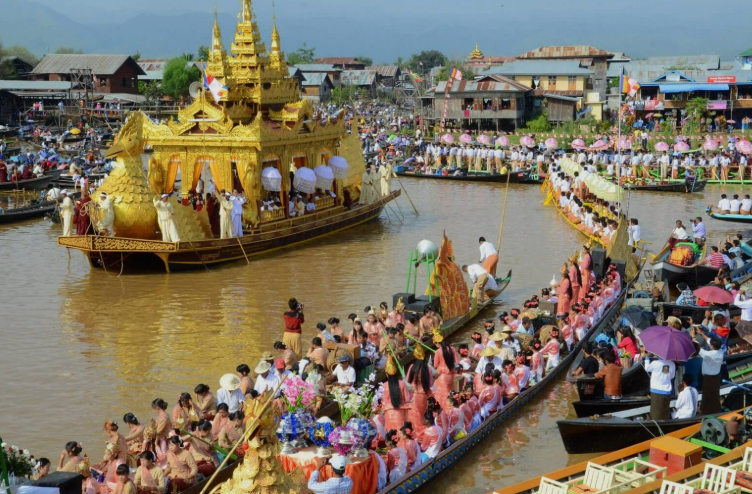
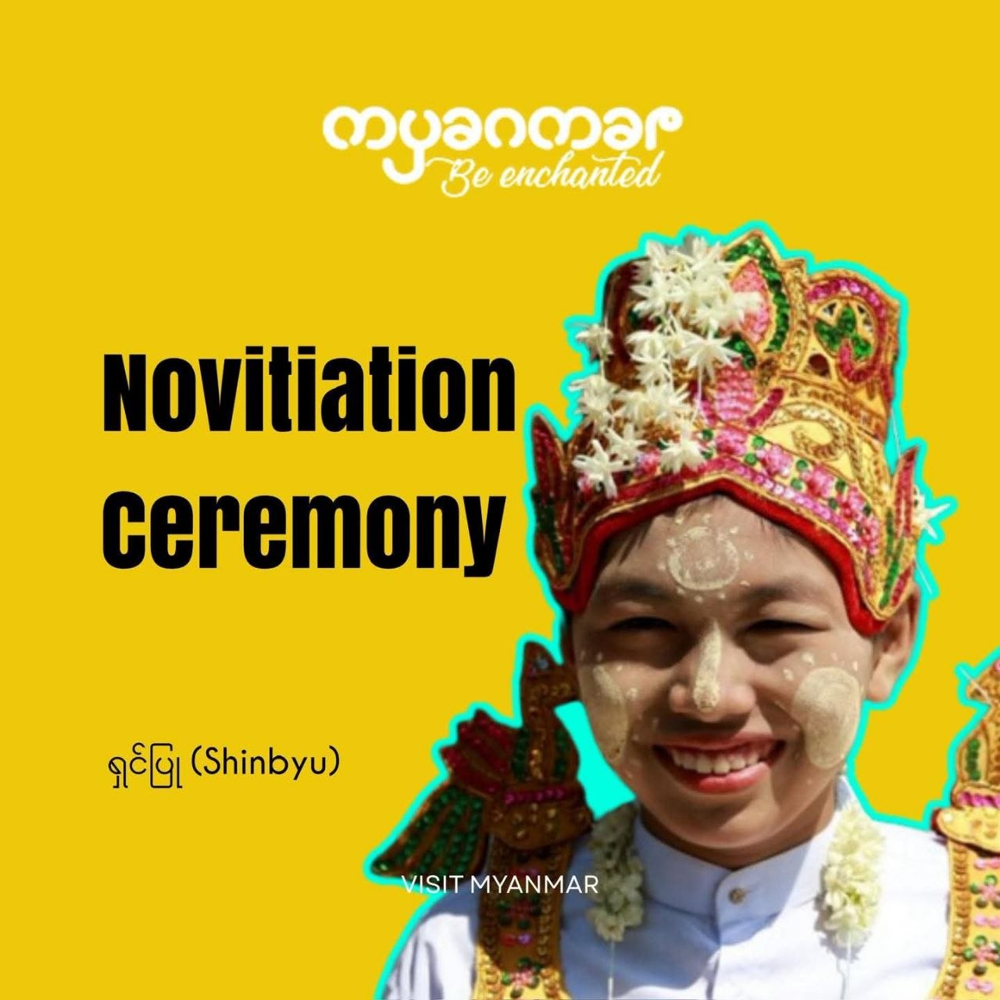
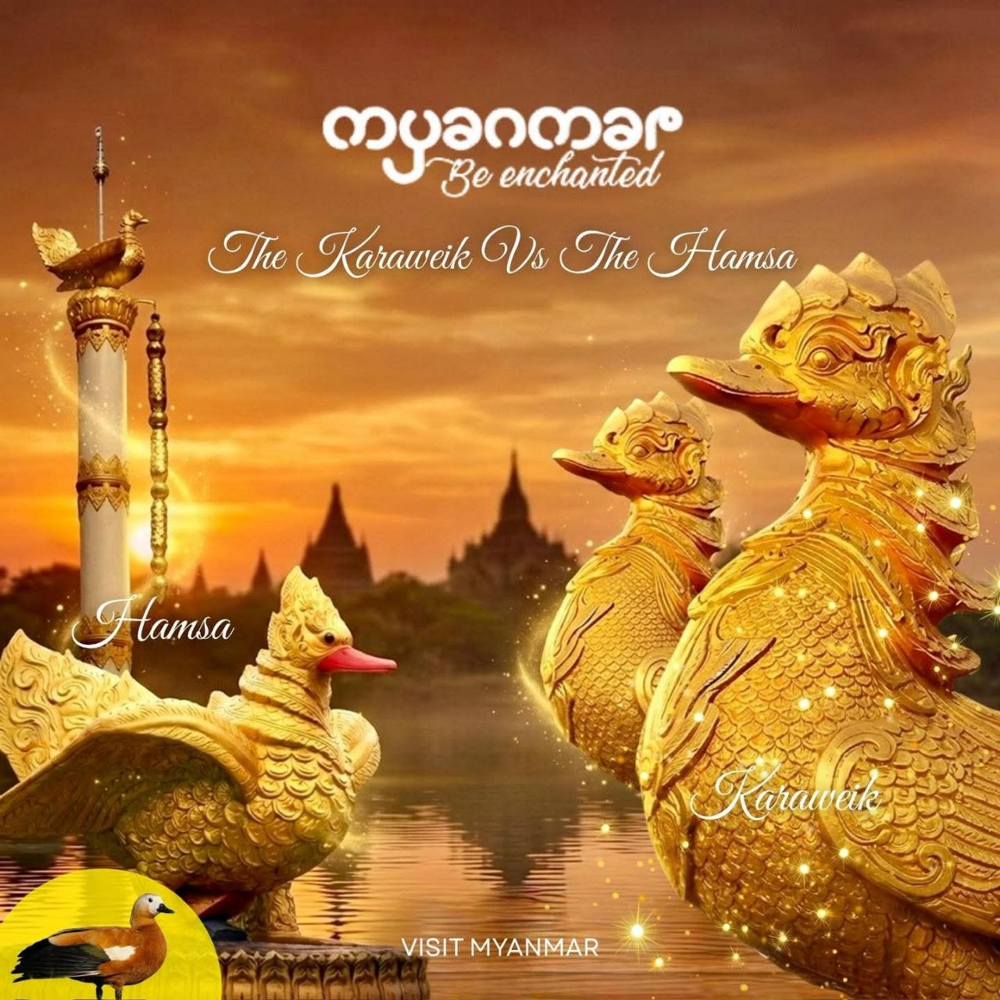

From the temple-strewn plains of Bagan to the glassy waters of Inle Lake, Myanmar’s beauty is unmatched. We invite you to discover our destinations.

Take a balloon trip over Bagan, relax on a deserted beach or get your hiking boots out in Putao – explore the myriad of activities available in Myanmar.

Tips for finding the best ways to travel to Myanmar. And once there: Planes, trains, cars or your own two feet? We’ll help you find the perfect way to get around.

#MyMyanmar is our travel blog. Don’t miss a thing! Stay up to date with the latest stories, events, trends, travel tips and breathtaking photos from our country.

Pakokku is usually crowded in June. Thousands of locals and visitors flock to Central Myanmar to witness the highly anticipated Pakokku Thiho Shin Pagoda Festival that features three sacred Buddha statues. Offer donations to the pagodas and watch locals trade high-quality regional crafts, and watch the bustling market stalls selling traditional Thanakha logs, fiber bags, and dried chilies. Nayon Tipitaka Festival is also celebrated in June, with locals parading the streets with offerings and supporting Buddhist monks during their rigorous nationwide religious examinations.

Amarapura is usually crowded in July. Thousands of locals and visitors flock to Mandalay to witness the highly anticipated Waso Full Moon Festival that features sacred robe-offering ceremonies at historic monasteries. Offer donations to the pagodas and watch locals gather and chant protective suttas, and watch the beautiful sight of devotees offering fresh summer flowers and colorful Waso robes to the monks. Taungbyone Nat Festival is also celebrated around July, with locals parading the streets with offerings and vibrant traditional orchestras performing energetic folk music.

Taungbyone is usually crowded in August. Thousands of locals and visitors flock to Mandalay Region to witness the highly anticipated Taungbyone Nat Festival that features traditional spirit propitiation rituals. Offer donations to the shrines and watch locals sing and dance to energetic Nat-Hsaing music, and watch the thrilling procession of devotees participating in the tree-chopping ceremony. Floating Alms-Bowl Festival is also celebrated in August, with locals parading the streets with offerings and organizing grand food donation lotteries for the local monks.

Inle Lake is usually crowded in September. Thousands of locals and visitors flock to Inle Lake to witness the highly anticipated Phaung Daw Oo Pagoda Festival that features enshrined Buddha images. Offer donations to the pagodas and watch locals sing and dance to folk songs, and watch the thrilling one-legged boat race participated by male locals. Manuha Pagoda Festival is also celebrated in September, with locals parading the streets with offerings and paper figurines of Lord Buddha’s reincarnations.

Towns and villages across Myanmar are usually crowded in March. Thousands of locals and visitors flock to historic pagodas to witness the highly anticipated Shinbyu Novitiation Ceremony that features young boys entering the monkhood. Offer donations to the monasteries and watch locals dance and cheer to energetic traditional music, and watch the thrilling street procession of "Princes-to-be" riding decorated horses in glittering silk robes. Tabaung Sand Pagoda Festival is also celebrated in March, with locals parading the streets with offerings and building beautiful, intricate sand stupas along riverbanks to gain spiritual merit.

Yangon and Bago are usually crowded with culture lovers. Thousands of locals and visitors flock to historic landmarks to witness the highly anticipated architectural marvels that feature legendary mythical birds. Offer donations to the shrines and watch locals take photos against breathtaking backdrops, and watch the thrilling contrast between the sharp-beaked Karaweik Palace and the flat-beaked Hintha pillars. Mon Cultural Festival is also celebrated alongside these icons, with locals parading the streets with offerings and dancing to traditional orchestras to honor their sacred heritage symbols.

Mingalabar!
Myanmar is one of the most magical and undiscovered destinations in the world: a golden land of breathtaking beauty and charm that is steeped in fascinating history and traditions.
We welcome you to Myanmar!
Let the Journey Begin!


Myanmar Tourism Marketing


{kind=link}